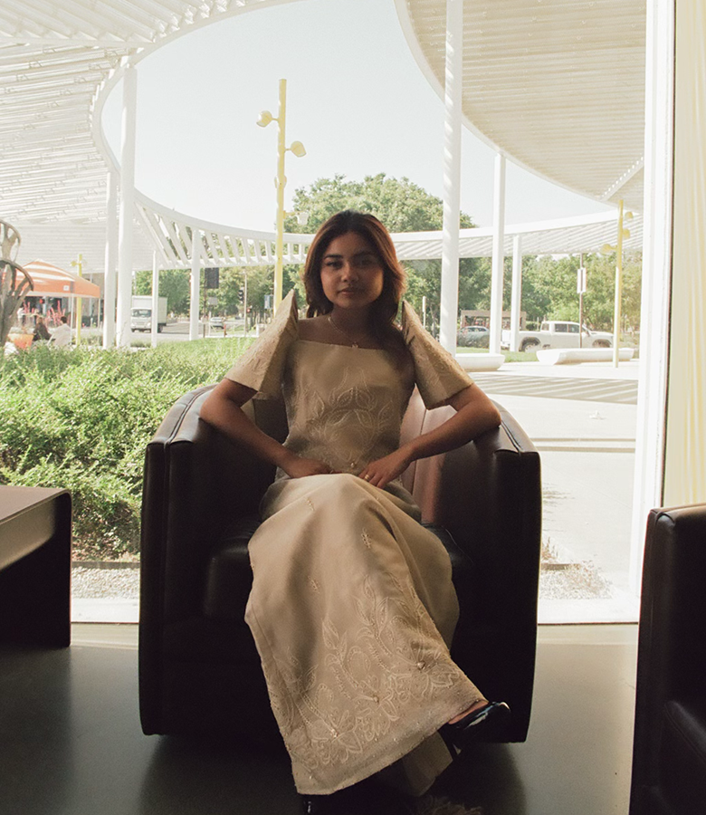
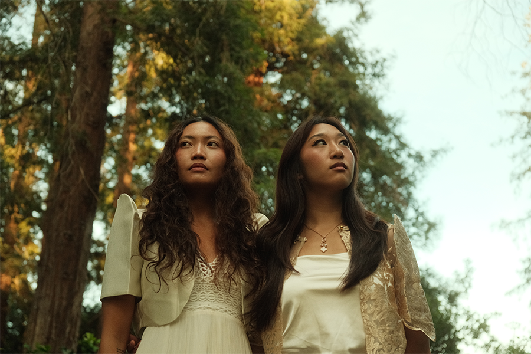
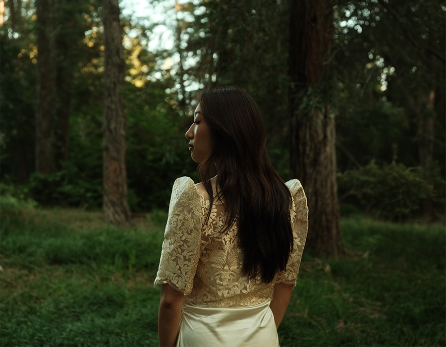
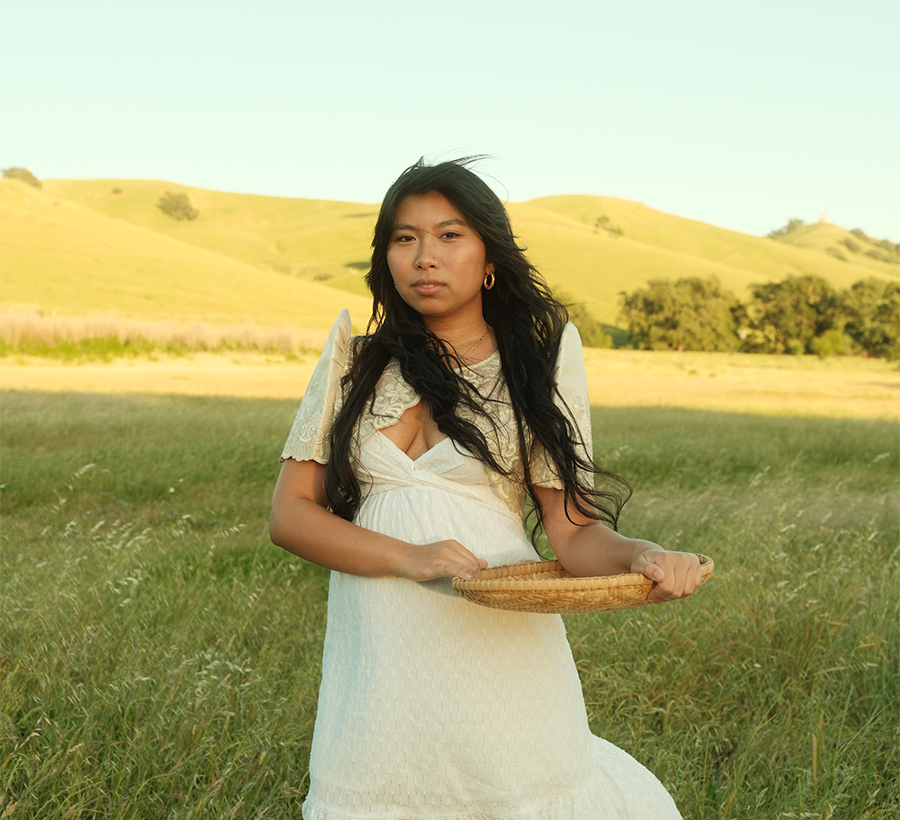
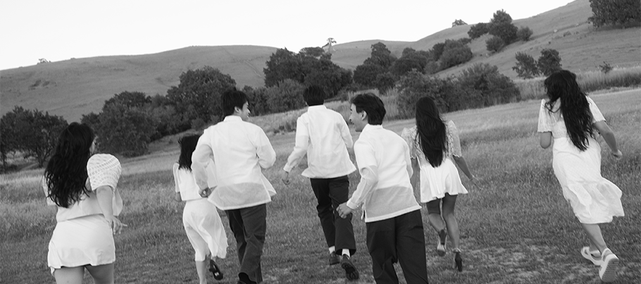
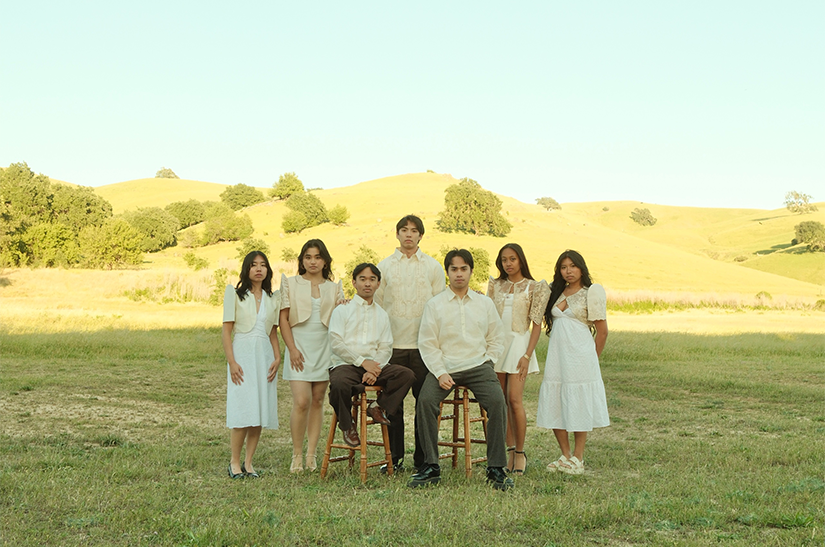
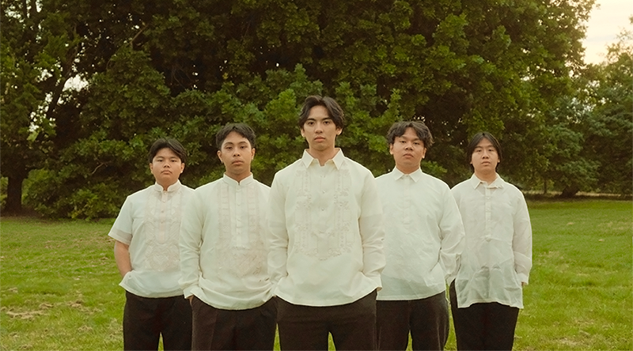
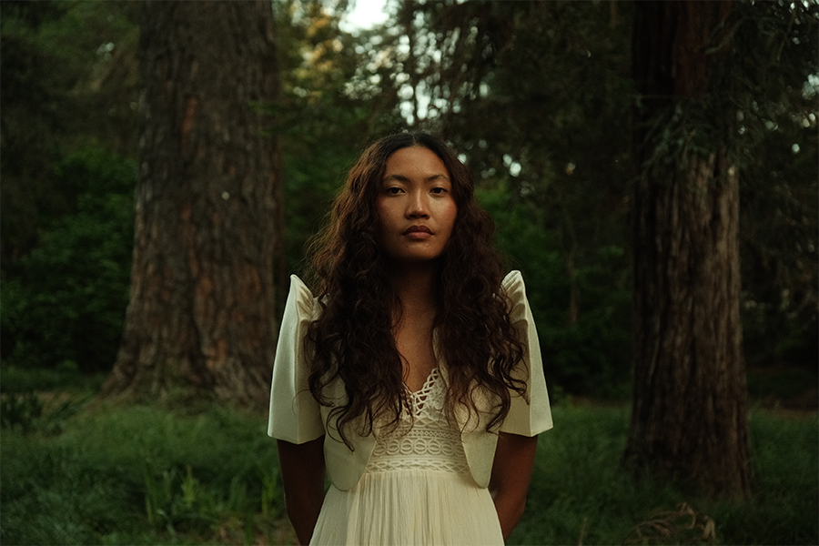

A Filipino-American Magazine
Cover Story — Issue 01
Dapithapon is the moment when the world is no longer day, yet not entirely night, but a space in between. The Filipino-American experience unfolds within a similar threshold of existing between cultures, languages, inherited expectations, and lived realities.





Section 02 — Culture

We carry forward the dreams our ancestors crossed oceans to protect, transforming their sacrifices into lives filled with possibility, purpose, and joy. Every step toward something greater becomes a continuation of their resilience—a living proof that what they endured was never in vain.
"A culture that knows how to endure without hardening, how to love without condition, how to transform even the smallest moments into something lasting."
Pagiging
A culture that knows how to endure without hardening, how to love without condition, how to turn even the smallest moments into something lasting.
Kamayan
To gather around a shared meal is to feel at home in one another, where comfort, closeness, and belonging come naturally.
Kapwa
We rise through one another, understanding the self as inseparable from the community it cares for.
Likha
Creation becomes a language where memory, identity, and imagination meet and take form.
Pamana
What is passed down lives on through us, carried forward not as memory alone, but as practice and legacy.
Around one table, generations meet through stories, food, and quiet gestures of care that outlive words. Even across different experiences and identities, gathering together becomes its own language of belonging.
↗
Bayanihan lives in the instinct to carry one another through hardship, celebration, and everything in between. It is the understanding that no burden is meant to be carried alone.
↗Home is often remembered through sound: laughter spilling from crowded rooms, music echoing through kitchens, and the familiar rhythm of cooking shared with others. These everyday noises become a kind of memory we carry wherever we go.
↗
Section 04 — Identity
No one is left behind: belonging isn't measured by fluency, familiarity, or blood quantum, but by presence. Whether you speak the language or are still finding your way, there is always a place for you within the circle.
Read Our Manifesto →